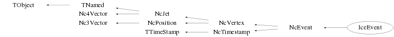

class IceEvent: public NcEvent
Class IceEvent Handling of IceCube event data. Basically this class provides an IceCube tailored user interface to the functionality of the class NcEvent. Notes : * In the event structure MC tracks are labeled with a negative track ID, whereas reconstructed tracks are labeled with a positive track ID. This allows for a direct selection of either MC or Reco tracks via the GetIdTrack() facility. * The particle codes used for the various tracks are the PDG ones. For IceCube specific "particle" types (e.g. deltae) the PDG database has been extended, as can be seen in the IceF2k class which provides a conversion facility from the F2K into the Ralice/IcePack format. Examples : Creation and filling of an event with some fictitious module data IceEvent* evt=new IceEvent(); evt->SetOwner(); // The starting unique signal ID. // In this example it will be increased everytime // when a new signal is created. Int_t sid=1; // Amanda module IceAOM m; m.SetUniqueID(123); m.SetNameTitle("OM123","Amanda module"); Float_t pos[3]={1,2,3}; m.SetPosition(pos,"car"); NcSignal s; s.SetSlotName("ADC",1); s.SetSlotName("LE",2); s.SetSlotName("TOT",3); s.Reset(); s.SetName("OM123 Hit 1"); s.SetUniqueID(sid++); s.SetSignal(100,"ADC"); s.SetSignal(-100,"LE"); s.SetSignal(-1000,"TOT"); m.AddHit(s); s.Reset(); s.SetName("OM123 Hit 2"); s.SetUniqueID(sid++); s.SetSignal(110,"ADC"); s.SetSignal(-101,"LE"); s.SetSignal(1001,"TOT"); m.AddHit(s); s.Reset(); s.SetName("OM123 Hit 3"); s.SetUniqueID(sid++); s.SetSignal(120,"ADC"); s.SetSignal(-102,"LE"); s.SetSignal(-1002,"TOT"); m.AddHit(s); evt->AddDevice(m); m.Reset(); m.SetUniqueID(456); m.SetName("OM456"); pos[0]=-4; pos[1]=-5; pos[2]=-6; m.SetPosition(pos,"car"); s.Reset(); s.SetName("OM456 Hit 1"); s.SetUniqueID(sid++); s.SetSignal(20,"ADC"); s.SetSignal(-200,"LE"); s.SetSignal(-2000,"TOT"); m.AddHit(s); s.Reset(); s.SetName("OM456 Hit 2"); s.SetUniqueID(sid++); s.SetSignal(21,"ADC"); s.SetSignal(-201,"LE"); s.SetSignal(2001,"TOT"); m.AddHit(s); s.Reset(); s.SetName("OM456 Hit 3"); s.SetUniqueID(sid++); s.SetSignal(22,"ADC"); s.SetSignal(-202,"LE"); s.SetSignal(-2002,"TOT"); m.AddHit(s); evt->AddDevice(m); // IceCube in-ice DOM IceIDOM mid; mid.SetUniqueID(958); mid.SetNameTitle("OM958","IceCube in-ice module"); pos[0]=9; pos[1]=5; pos[2]=8; mid.SetPosition(pos,"car"); s.Reset(); s.SetName("OM958 Hit 1"); s.SetUniqueID(sid++); s.SetSignal(40,"ADC"); s.SetSignal(-400,"LE"); s.SetSignal(-4000,"TOT"); mid.AddHit(s); s.Reset(); s.SetName("OM958 Hit 2"); s.SetUniqueID(sid++); s.SetSignal(41,"ADC"); s.SetSignal(-401,"LE"); s.SetSignal(4001,"TOT"); mid.AddHit(s); s.Reset(); s.SetName("OM958 Hit 3"); s.SetUniqueID(sid++); s.SetSignal(42,"ADC"); s.SetSignal(-402,"LE"); s.SetSignal(-4002,"TOT"); mid.AddHit(s); evt->AddDevice(mid); // IceTop DOM IceTDOM mtd; mtd.SetUniqueID(4958); mtd.SetNameTitle("OM4958","IceTop module"); pos[0]=49; pos[1]=5; pos[2]=8; mtd.SetPosition(pos,"car"); s.Reset(); s.SetName("OM4958 Hit 1"); s.SetUniqueID(sid++); s.SetSignal(50,"ADC"); s.SetSignal(-500,"LE"); s.SetSignal(-5000,"TOT"); mtd.AddHit(s); s.Reset(); s.SetName("OM4958 Hit 2"); s.SetUniqueID(sid++); s.SetSignal(51,"ADC"); s.SetSignal(-501,"LE"); s.SetSignal(5001,"TOT"); mtd.AddHit(s); s.Reset(); s.SetName("OM4958 Hit 3"); s.SetUniqueID(sid++); s.SetSignal(52,"ADC"); s.SetSignal(-502,"LE"); s.SetSignal(-5002,"TOT"); mtd.AddHit(s); evt->AddDevice(mtd); Investigation of the event contents // Provide event data overview evt->Data(); // Select a specific device (i.e. OM) from the event NcDevice* dx=(NcDevice*)evt->GetIdDevice(958); if (dx) dx->Data(); // Select a specific hit from the event NcSignal* sx=evt->GetIdHit(5,"IceGOM"); if (sx) sx->Data(); // Dump all the information for the various stored devices Int_t ndev=evt->GetNdevices(); for (Int_t idev=1; idev<=ndev; idev++) { IceGOM* om=(IceGOM*)evt->GetDevice(idev); if (om) om->Data(); } // Dump all the information for the various stored hits // Obtain pointers to the hits for all generic OM's (i.e. IceGOM) TObjArray* hits=evt->GetHits("IceGOM"); Int_t nhits=0; if (hits) nhits=hits->GetEntries(); for (Int_t ih=0; ih<nhits; ih++) { NcSignal* sx=(NcSignal*)hits->At(ih); if (sx) sx->Data(); } // Obtain the minimum and maximum recorded TOT value Float_t vmin,vmax; evt->GetExtremes("IceGOM",vmin,vmax,"TOT"); cout << " Extreme values : vmin = " << vmin << " vmax = " << vmax << endl; Some simple module and hit manipulations // Ordered hits w.r.t. decreasing TOT TObjArray* ordered=evt->SortHits("IceGOM","TOT",-1); nhits=0; if (ordered) nhits=ordered->GetEntries(); for (Int_t i=0; i<nhits; i++) { NcSignal* sx=(NcSignal*)ordered->At(i); if (sx) sx->Data(); } // Ordered devices from the already ordered hit array TObjArray* devs=evt->SortDevices(ordered,0,0); ndev=0; if (devs) ndev=devs->GetEntries(); for (Int_t id=0; id<ndev; id++) { NcDevice* dx=(NcDevice*)devs->At(id); if (dx) dx->Data(); } // Newly ordered devices w.r.t. decreasing ADC TObjArray* devs=evt->SortDevices("IceGOM","ADC",-1); ndev=0; if (devs) ndev=devs->GetEntries(); for (Int_t id2=0; id2<ndev; id2++) { NcDevice* dx=(NcDevice*)devs->At(id2); if (dx) dx->Data(); } A simple 3D event display of the modules TCanvas* c1=new TCanvas("c1","c1"); c1->x3d(); TView* view=new TView(1); view->SetRange(-50,-50,-50,50,50,50); view->ShowAxis(); evt->DisplayHits("IceGOM","TOT",1e4,1); --- Author: Nick van Eijndhoven 23-jun-2004 Utrecht University - Modified: NvE $Date: 2016-08-24 13:11:33 +0200 (Wed, 24 Aug 2016) $ NCFS
Function Members (Methods)
public:
protected:
| void | NcJet::AddTrack(NcTrack& t, Int_t copy) |
| void | NcJet::AddTrack(NcTrack* t, Int_t copy) |
| virtual void | TObject::DoError(int level, const char* location, const char* fmt, va_list va) const |
| Double_t | Nc4Vector::GetScaLong() |
| Double_t | Nc4Vector::GetScaTrans() |
| void | NcVertex::Init() |
| void | NcEvent::LoadHits(const char* classname, TObjArray* hits = 0) |
| void | TObject::MakeZombie() |
| void | NcJet::RemoveTrack(NcTrack* t, Int_t compress) |
| void | NcJet::SetNtinit(Int_t n = 2) |
Data Members
public:
| enum TObject::EStatusBits { | kCanDelete | |
| kMustCleanup | ||
| kObjInCanvas | ||
| kIsReferenced | ||
| kHasUUID | ||
| kCannotPick | ||
| kNoContextMenu | ||
| kInvalidObject | ||
| }; | ||
| enum TObject::[unnamed] { | kIsOnHeap | |
| kNotDeleted | ||
| kZombie | ||
| kBitMask | ||
| kSingleKey | ||
| kOverwrite | ||
| kWriteDelete | ||
| }; |
protected:
| TObjArray* | NcVertex::fConnects | Array to hold the pointers to the auto-generated connecting tracks |
| Int_t | NcEvent::fDevCopy | Flag to denote creation of private copies of the devices |
| TObjArray* | NcEvent::fDevices | Array to hold the pointers to the various devices |
| TObjArray* | NcEvent::fDevs | ! Temp. array to hold references to user selected devices |
| TObject* | NcEvent::fDisplay | ! Temp. pointer to hold objects which serve event displays |
| Double32_t | Nc4Vector::fDresult | ! The error on the scalar result of an operation (e.g. dotproduct) |
| Double32_t | Nc3Vector::fDresult | ! Error on scalar result (e.g. norm or dotproduct) |
| Double_t | NcTimestamp::fDut | The value of UT-UTC in seconds at the moment of the timestamp |
| Double32_t | Nc4Vector::fDv0 | The error on the scalar part |
| Double32_t | Nc4Vector::fDv2 | The error on the Lorentz invariant |
| Float_t | NcJet::fEscale | The scale of the energy/momentum units of the jet |
| Int_t | NcEvent::fEvent | The event number |
| TObjArray* | NcEvent::fHits | ! Temp. array to hold references to the registered NcDevice hits |
| Int_t | NcVertex::fJetCopy | Flag to denote creation of private copies in fJets |
| TObjArray* | NcVertex::fJetTracks | Array to hold the pointers to tracks introduced by jet addition |
| TObjArray* | NcVertex::fJets | Array to hold the pointers to the jets |
| Int_t | NcTimestamp::fJns | Remaining fractional number of seconds (in nanoseconds) elapsed within the MJD |
| Int_t | NcTimestamp::fJps | Remaining fractional number of nanoseconds (in picoseconds) elapsed within the MJD |
| Int_t | NcTimestamp::fJsec | Number of seconds elapsed within the MJD |
| Int_t | NcTimestamp::fLeap | The cumulated number of leap seconds at the moment of the timestamp |
| TObjArray* | NcVertex::fLines | ! Array to (temporarily) store the 3D lines for the event display |
| Int_t | NcTimestamp::fMJD | Modified Julian Date |
| TString | TNamed::fName | object identifier |
| Int_t | NcVertex::fNjets | The number of jets |
| Int_t | NcVertex::fNjmax | The maximum number of jets |
| Int_t | NcJet::fNtinit | The initial max. number of tracks for this jet |
| Int_t | NcJet::fNtmax | The maximum number of tracks for this Jet |
| Int_t | NcJet::fNtrk | The number of tracks in the jet |
| Int_t | Nc3Vector::fNv | The number of components of the array fV |
| Int_t | NcVertex::fNvmax | The maximum number of (secondary) vertices |
| Int_t | NcVertex::fNvtx | The number of (secondary) vertices |
| TObjArray* | NcEvent::fOrdered | ! Temp. array to hold references to various ordered objects |
| Float_t | NcJet::fQ | The total charge of the jet |
| NcPositionObj* | NcJet::fRef | The reference-point of the jet |
| Int_t | NcEvent::fRun | The run number |
| Int_t | Nc4Vector::fScalar | Flag denoting scalar mode |
| Float_t | NcPosition::fScale | The unit scale used for the position coordinates |
| TObjArray* | NcJet::fSelected | ! Temp. array to hold user selected or ordered objects |
| TArrayI* | fStrings | ! Temp. array to hold the string ids of fired modules |
| TString | TNamed::fTitle | object title |
| Int_t | NcTimestamp::fTmjd | Number of elapsed TAI days equivalent to MJD counting |
| Int_t | NcTimestamp::fTns | Remaining fractional number of seconds (in nanoseconds) elapsed within the TAI day |
| Int_t | NcTimestamp::fTps | Remaining fractional number of nanoseconds (in picoseconds) elapsed within the TAI day |
| Int_t | NcJet::fTrackCopy | Flag to denote creation of private copies in fTracks |
| TObjArray* | NcJet::fTracks | Array to hold the pointers to the tracks of the jet |
| Int_t | NcTimestamp::fTsec | Number of seconds elapsed within the TAI day |
| NcTimestamp* | NcPosition::fTstamp | The timestamp for this position |
| TTree* | NcTimestamp::fUTCdata | Internal tree to contain the daily leap second and UT-UTC values |
| NcSignal* | Nc4Vector::fUser | NcSignal object containing user data |
| Int_t | NcJet::fUserId | The user defined identifier |
| Int_t | NcTimestamp::fUtc | Flag to denote that the UTC related info below has been provided (-1=auto 0=no 1=yes) |
| Nc3Vector | Nc4Vector::fV | The 3-vector part |
| Double32_t* | Nc3Vector::fV | [fNv] Vector in spherical (and errors in Cartesian) coordinates |
| Double32_t | Nc4Vector::fV0 | The scalar part |
| Double32_t | Nc4Vector::fV2 | The Lorentz invariant (v^i*v_i) |
| Int_t | NcVertex::fVertexCopy | Flag to denote creation of private copies in fVertices |
| TObjArray* | NcVertex::fVertices | Array to hold the pointers to the (secondary) vertices |
| Double_t | NcEvent::fWeight | The event weight |
Class Charts
{kind=link}
{kind=link}
{kind=link}
{kind=link}

Function documentation
Int_t GetNstrings(TString classname)
Provide the number of fired strings of good modules of the specified classname for this event.
Int_t GetNstrings(NcTrack& t, TString classname)
Provide the number of fired strings of modules of the specified classname, associated with the specified track.
Int_t GetNstrings(NcJet& j, TString classname)
Provide the number of fired strings of modules of the specified classname, associated with the specified jet.
Int_t GetNmodules(NcTrack& t, TString classname)
Provide the number of fired (D)OMs of the specified classname, associated with the specified track.
Int_t GetNmodules(NcJet& j, TString classname)
Provide the number of fired (D)OMs of the specified classname, associated with the specified track.
Int_t GetStringMax(TString classname, Int_t* id = 0, Float_t* x = 0, Float_t* y = 0)
Provide the max. number of fired good (D)OMs of the specified classname at a single string. In case the arguments "id", "x" or "y" are specified, the following information is returned via the corresponding pointer : id : The ID of the string that had the maximum number of firing good (D)OMs x : The X coordinate (in m) of the string that had the maximum number of firing good (D)OMs y : The Y coordinate (in m) of the string that had the maximum number of firing good (D)OMs By default id=0, x=0 and y=0 which implies that no info is returned.
Float_t GetTriggerTime(TString trigname, TObjArray* arr = 0, Int_t slc = 0, TArrayF* peaks = 0) const
Determination of the requested trigger time. Input arguments : trigname : The name of the requested trigger. arr : Array containing optical modules or hits to determine the median of recorded hit times. slc : Flag to denote to use (1) or not use (0) SLC hits for the trigger time determination peaks : Array with the hit time values where hit clusters (=peaks) were found in the hit time distr. Notes : 1) Specification of the trigger name "Average" will provide the median of all the recorded trigger times for the current event (provided no array "arr" is specified as explained below). In the determination of this median value the GLOBAL triggers are not taken into account. 2) In case an array "arr" is specified, the trigger time will be taken as the median of all the recorded hit times. When an array "arr" is specified, the specified "trigname" is irrelevant. 3) The array "arr" may either contain optical modules or hits, but NOT a mix of both. 4) In case an array pointer "peaks" is specified in addition to an array "arr", the hit time distribution will be analysed for hit clusters (=peaks). The hit times corresponding to the peaks are returned via this array "peaks". The number of detected peaks may be obtained via peaks->GetSize(). Default : arr=0, slc=0 and peaks=0. In case of missing information a trigger time value of 0 will be returned.
TObject* Clone(const char* name = "") const
Make a deep copy of the current object and provide the pointer to the copy. This memberfunction enables automatic creation of new objects of the correct type depending on the object type, a feature which may be very useful for containers like NcEvent when adding objects in case the container owns the objects. This feature allows e.g. NcEvent to store either IceEvent objects or objects derived from IceEvent via tha AddDevice memberfunction, provided these derived classes also have a proper Clone memberfunction.